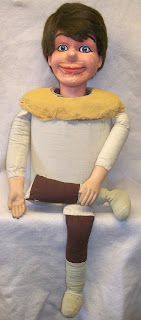
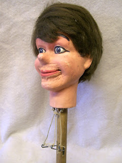

Should I or shouldn't I?
7/12/2011
{kind=link}

{kind=link}

Dr. Earl Reum stopped by Maher Studios many times over the years, usually unannounced and always a delight. On one visit he surprised me with a gift of this figure. It is a smaller Davenport/Insull with only three animations (upper and lower lip, and eyes). Because it was not in the best of appearance we never put it on display. But I saved it, not only because it was an Insull, but it is also unique in that it was once sold by Maher School of Ventriloquism (Detroit).The Jerry Mahoney body with a shoulder piece made of red rosin paper machie, is the hand work of Madeleine Maher, and the feature that points to the Detroit School. Someone other than Mrs. Maher attempted to repaint and rewig the figure. More than attempt, they did so, but poorly, and in so doing, the mouth leathers are pretty much ruined.
Looking at this figure now I have to decide its fate:
1) Sell it as is...
2) Restore it...
3) Toss it...
Okay, I won't do #3, but as for #1 or #2, I'm still debating with myself, while leaning toward #2.